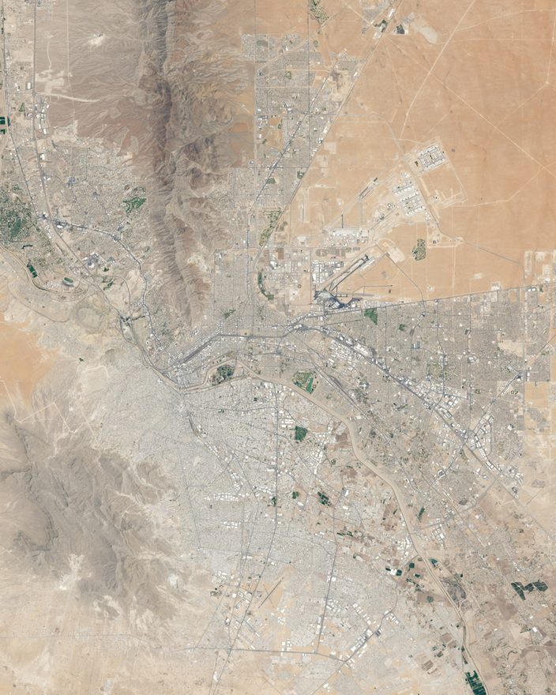

A proposal · El Paso · Ciudad Juárez
Meta is building a $10 billion AI data center in Northeast El Paso. This is a proposal for a much smaller one that belongs to the people who live here, governed by a board its members elect.
Nothing is running yet. Signing up gets you occasional email about the project and nothing else.
We are not here to litigate whether Meta keeps its word, but to build something else that doesn't ask you to take its word.
We looked into it, and it turns out ethical AI services are easy to build ourselves, with help already available from the global open source community. We also realized it doesn't have to be perfect from day one to be more promising in the long run.

Why
In October 2025 Meta announced a $1.5 billion AI data center in Northeast El Paso,[1] later expanded to a $10 billion project.[2] The company committed publicly to matching 100% of the facility's electricity with clean and renewable energy, including on-site solar.[5]
El Paso Electric's regulatory filings tell a different story about how the power actually arrives. The filings say large-scale solar and battery storage could theoretically supply the data center, but that such an installation would require thousands of acres adjacent to the site which are not available.[2] The utility has instead sought a noncompetitive contract to stack 813 modular natural gas generators to power it.[3][4]
“The company has made public commitments to power their project with renewable energy sources including on-site solar generation, and I think they need to be held to those commitments.”
Chris Canales, El Paso City Council[3]Meta's supply agreement with El Paso Water permits an average of 750,000 gallons of potable water per day, rising to a permitted average of 1.5 million gallons per day once the campus is fully built out — more than the Marathon Petroleum refinery in South-Central El Paso bought from El Paso Water last year.[2]
In fairness, and because getting this right matters: Meta says the facility uses a closed-loop, liquid-cooled system that recirculates the same water, will use zero water for the majority of the year, and will consume water at a rate comparable to a typical West Texas golf course.[5] Those are the company's figures. The permitted maximums above are what the agreement allows.
Not conversations, in practice — records. Commercial assistants retain what you send, and several of them use it to train future models unless you find the setting that says otherwise. Some route a sample to humans for review. All of it is discoverable by subpoena. This is not a scandal; it is the normal design of a product whose economics require your data to be useful to the company.
People type things into these tools that they would not put in an email: the health question before the doctor's appointment, the immigration question, the letter to a landlord, the business idea. Treating that as ordinary telemetry is a choice, and it is one a member-governed organization has no reason to make.
And the reason to believe it is structural rather than sentimental: these commitments sit in the founding documents at the highest amendment threshold, so changing one takes a supermajority of directors and leaves a permanent public record. The mechanism is written down before there is anything to protect.
At the start we rent computing power from a large cloud provider, so your text passes through their infrastructure under their contract. We can bind ourselves completely and we can only bind them by agreement. Anyone claiming otherwise while renting is overselling it.
What we can do is publish which provider, on which terms, and change providers if those terms change. That is weaker than owning the machine, which is why owning the machine is on the list.
Ten billion dollars builds a data center owned by shareholders. The budget below builds a year of one owned by the people who use it. Those aren't competing bids for the same job — they're answers to different questions, and only one of them is being asked out loud right now.
When you pay $20 a month for an assistant, that money leaves the city and accrues to whoever holds the equity. When you pay $5 here, it pays for somebody else's free access, and the surplus stays in the valley. Same transaction, opposite direction.
The part that actually distinguishes this, though, isn't the price. There is no equity to hold. A nonprofit has no owners, so there is nobody to buy out, no acquisition, no exit, no investor who eventually needs a return larger than the community can pay. If it dissolves, the founding documents send whatever is left to another nonprofit — never to a founder, never to a member. That is not a promise anyone makes about a startup, because a startup cannot make it.
None of this requires believing anything about billionaires. It only requires noticing that infrastructure the public depends on tends to end up owned by whoever can afford to buy it, and that the exception is when people organize before that happens. Electric co-ops, credit unions, and mutual water companies all exist for that reason.
Cheaper than people expect. One modest server runs the software; the real expense is the AI itself, billed by the word. Modeled at 200 members at ordinary usage — published before anyone has given us a dollar:
| Line item | Per month | Per year |
|---|---|---|
| Server, storage, bandwidth | $65 | $780 |
| AI usage — 200 members × ~$1.07 | $214 | $2,565 |
| Domain, email, monitoring | $15 | $180 |
| Google's nonprofit cloud credit | — | up to −$10,000 |
| Projected first-year cost | $294 | $3,525 |
For comparison, a single ChatGPT Plus subscription is $20 a month — $240 a year for one person. The projected budget above serves two hundred.
The largest line item in year one isn't technical at all. It's the lawyer who writes bylaws strong enough that a future board can't quietly walk away from the promises in them.
Every figure here comes from published vendor pricing and a cost model you can run yourself. When the numbers change, this page changes.
There is already a large movement of people running their own software instead of renting it from five companies — Nextcloud instead of Google Drive, Mastodon instead of X, Matrix instead of Discord, Jellyfin instead of Netflix, Immich instead of Google Photos. It works. It's mature. Millions of people do it.
And going in on a shared server together was never quite worth the hassle. Any one of those services runs happily on a cheap virtual machine or an old desktop in a closet. Once you add the cost of organizing — agreeing on who administers it, who pays, who's accountable when it breaks — pooling money cost more than it saved. So mostly people didn't.
Serious AI is the first self-hosted service where the hardware is genuinely expensive and genuinely lumpy. You cannot run it on a Raspberry Pi in a closet. For the first time, pooling is obviously worth it.
Here's the part that makes this a data center and not a chatbot: once the hard thing exists — the machine, the organization, the board, the billing, the person on call — every additional service costs almost nothing to add. The expensive part was never the software. It was the trust and the coordination, and those are one-time costs.
So the AI is the reason to finally do it. It isn't the point.
Candidates, not commitments. Members would decide what's worth running and in what order.
May First Movement Technology is a US nonprofit membership cooperative where members pay dues, collectively own the equipment, and use it for hosting, email, and Nextcloud accounts. CHATONS is a French-founded collective of more than seventy small, ethical, transparent hosts offering exactly these services as an alternative to the big five. And the closest local ancestor is older than any of it: rural electric cooperatives, formed because the utilities wouldn't serve people the market found inconvenient.
None of this is a novel idea. What would be new is doing it here, in El Paso and Juárez, on purpose, in the middle of an argument about who gets to build data centers in this valley.
The proposal
Not a rival to Meta's facility. Something much smaller and completely different in kind: the same sort of AI assistant people pay $20 a month for — chat, document analysis, research, writing help — run by a Texas nonprofit whose board is elected by its members and whose books are open.
To be clear about what this is not: it isn't a city program, it isn't asking for public money, and it has no connection to city government. It's a private nonprofit that El Pasoans join and run themselves — closer to a credit union or an electric co-op than to anything at City Hall.
The founding proposal would put a few commitments beyond the reach of a future board acting alone: your conversations are never used to train anything, the finances are published in full, and the electricity and water behind the service are reported honestly — including the parts we're estimating and the years we fall short.
Proposed starting point. A founding board would set the final structure — this is a direction, not a price list.
Free
$0 — a real allowance, not a trial
A minimum level of access for anyone living in the metro with an El Paso or Juárez ID, on either side of the river. This is the point of the organization, not a marketing funnel.
Member
Flat annual dues — waived on request
Buys a vote for the board, a seat at the annual meeting, and the right to inspect the books. It does not buy compute. You don't have to pay for a plan to vote, or vote to pay for a plan.
Supporter
$5–50/month
More capacity, priced under the commercial alternative rather than against it. Pick what you can afford; the surplus pays for everyone on the free tier.
Dues waived on request, no questions asked. If governance costs $30, the organization is governed by people who have $30.
Roadmap
Published in advance and on purpose, so you can hold us to them. A plan you can only read after the fact isn't a plan, it's a press release.
A list of people here who would use it. If that list stays short, this shouldn't exist, and we'll say so instead of pushing ahead.
Texas requires at least three. The board is the product here — people are being asked to trust this because of who sits on it. At least one should be someone willing to vote against the founder in public.
Form 202 with the Texas Secretary of State — $25. It names the purpose, whether there are voting members, and where the assets go if the organization ever dissolves. Those three lines are the mission lock, and they're hard to change later on purpose.
A supermajority of the membership — not just the board — required to change the core commitments. A date certain for the first member election. No permanent founder seat.
An existing charity that can accept tax-deductible donations on the project's behalf while the IRS application is pending. It also means someone else's bookkeeper is watching the money from day one.
One server, open-source software, free access for residents on both sides of the river, paid tiers below cost. Metered from the first day so a generous promise can't quietly bankrupt us — running out of money because we didn't measure it is exactly the failure this organization exists to be the opposite of.
IRS Form 1023 — the long form, not the short one, because the short one is an attestation nobody checks and we'd rather be checked. Then Texas franchise and sales tax exemption, the nonprofit payment-processing rate, and Google's nonprofit cloud credits.
First member election. Board seated by vote rather than by appointment. Any special founder role expires on the schedule written in step 04. First annual report and tax return published the day they're filed.
Files, chat, photos, video calls, email for local nonprofits. The machine and the organization already exist by this point; adding a service is nearly free. Members vote on what's worth running and in what order.
Which AI models we're willing to buy and from whom. How long conversations are kept. Whose money we take. What we refuse to host. These are genuinely hard and reasonable people disagree — so the deliberation gets published, not just the verdict.
Local machines in El Paso with a published water and power budget, sized honestly and reported against every year — including the years we miss. Until then we rent, and we say so.
One city's nonprofit can't out-build a hyperscaler. A network of them, pooling purchasing and operations with cooperative hosts, municipal broadband projects, and other community data centers, can start to make the case that data centers could be built better — and demonstrate it rather than demand it.
The name says data center, and on day one this would not own one. Running our own AI hardware costs more and delivers worse results than buying capacity until there are thousands of members — so at the start, this would be a nonprofit renting from the same large companies El Paso is arguing with, under local governance and with the receipts published.
That's a real limitation and it belongs on the front page rather than in a footnote. It's also why steps 09 and 11 exist: the machine that earns the name is the one running files and chat and photos and backups for the whole city, and eventually sitting in El Paso. Until it does, we rent, and we say so every year — including the years we miss the milestone.
Why here
The obvious objection to this proposal is that it is far too small. If the worry is who controls AI, why build something for one metropolitan area instead of joining something national?
Because accountability does not survive being scaled up. A membership spread across a continent has no meeting it can actually convene, no director anyone runs into at the grocery store, and no water figure that means anything to the people voting on it. The remedy for governance you cannot check is not more governance at a greater distance. Every part of this that makes it trustworthy — an annual meeting you can attend, a board you can corner, a utility bill you can compare against your own — needs the organization to be small enough to be watched by the people it belongs to.
So the problem is global and the governance has to be near. That is why step 12 is a network of local organizations rather than one big one: it is the only way this grows without becoming the same kind of remote institution it exists to answer.
El Paso and Ciudad Juárez are one metropolitan area of roughly 2.5 million people that happens to have an international border running through it. More to the point here: the Rio Grande and the Hueco Bolson aquifer are shared, and so is the air. A data center's draw on either one is a binational fact whether or not anyone treats it that way.
Which means an organization built on local accountability for water and power, that drew its own line at the river, would be arguing a visibly weaker version of its own case. So the intent is to serve the whole metro from the start — and the site is in Spanish for the same reason.
Serving Juárez residents over the internet is genuinely straightforward. A US nonprofit may serve people in another country; charitable status does not require a domestic-only beneficiary class, and donations stay deductible because that depends on where the organization is, not where it works. The added work is a Spanish-language privacy notice that satisfies Mexican law, honoring data rights under it, and some extra reporting on the annual tax return.
Putting hardware or staff physically in Juárez is a different order of difficulty — a Mexican entity, its own tax registration, import duties on equipment, two sets of books. That is a later decision and we are not pretending otherwise.
Mexico replaced its federal data protection law in March 2025 and dissolved INAI, its independent privacy regulator, moving enforcement to a federal ministry. We do not yet know whether that law reaches a service run from servers in the United States. That question needs a Mexican lawyer, and it is on the list rather than quietly assumed away.
What would actually help
The single most useful thing. A list of El Pasoans who want this is the argument for forming it, and it costs you nothing.
Texas requires at least three. A founder plus two friends is legally sufficient and worth nothing. The most valuable person here is one who will vote against the founder in public.
The bylaws are the product. Getting the mission lock, the member voting rules, and the conflict-of-interest policy right is the difference between a real institution and a website.
Preferably someone who was in the room for the council hearings, or who has been paying the water bill and reading the news and getting angry about it.
Donations aren't being accepted, because there's no entity to accept them and no exemption to make them deductible. When that changes, this page will say so.
This form is ours: it posts to our own server and writes to a file we control. You can read the code that receives it.
No donations requested, now or on the confirmation page. There is nothing to donate to yet.